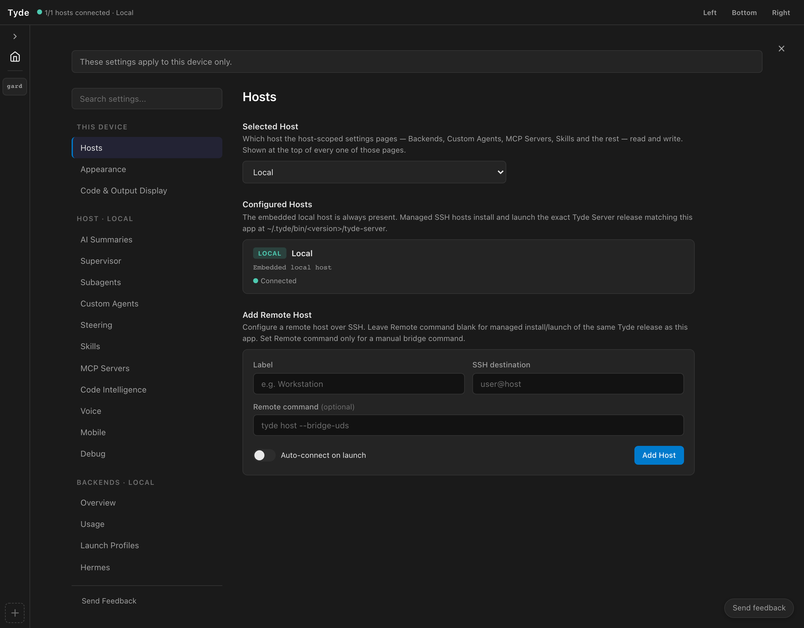

Connect remote hosts
Add an SSH host, configure its backends, open its projects, and reconnect to its running agents.
Where files and agents run
A remote host runs Tyde’s server, the CLI backends, and the agents that use them. Your desktop client connects to that host to display state and send your actions. You can connect to more than one host from the same laptop.
When you disconnect the client, agents can continue on the remote host. When you reconnect, Tyde receives the host’s current workspace state. This depends on the host and its processes staying running; disconnecting your laptop is different from shutting down the server.
Agents run on their hosts. Your laptop connects you to their work.
Interactive concept diagram. These example agents illustrate where work runs.
Connect your first server
- Make sure you can access the server through SSH. Use the account that should own the projects and agent processes.
- Open Settings → Hosts → Add Remote Host.
- Give the host a recognizable label, such as Home server, and enter its SSH destination, such as
developer@home-server. - Leave Remote command blank for managed installation and launch of the matching Tyde release. Use a custom command only when you manage the bridge yourself.
- Choose whether to auto-connect on launch, then select Add Host. Connect and wait for the connected state.
- Select this host in settings. Open Backends and install or authenticate the harnesses you want to run there.
Keep the host selector in view. Backend installation, skills, custom agents, and host settings apply to the selected machine. Your laptop’s CLI login and filesystem paths are not the remote server’s configuration.
{kind=link}

Open the remote code
Open the project browser and select your new host. Navigate to a repository on that server and choose Open Project Here. Start an agent within the project and give it a bounded task.
Code browsing, Git changes, and review now refer to files on the server. You do not need to copy those files onto your laptop to inspect them in Tyde.
Add a home server and a work server
Repeat the host setup for your second server. Use clear labels and open the appropriate projects under each host. For example, keep a personal website on Home server and an application plus its API on Work server.
Move between the projects to inspect their agents. Before changing shared configuration, check the settings host selector. Before starting a new conversation, check its host and project context.
Disconnect and return
- Leave a known task running on a remote host.
- Use that host’s Disconnect control. This closes the client connection.
- Reconnect using Connect.
- Open the original agent and inspect the work that happened while you were away.
If you reconnect after a host restart, inspect History and the actual process state. Do not assume that an interrupted server process continued merely because its conversation was saved.
For mobile access, Tyde also has host pairing controls in settings. See mobile access for the distinction between connecting a desktop over SSH and pairing a mobile client.